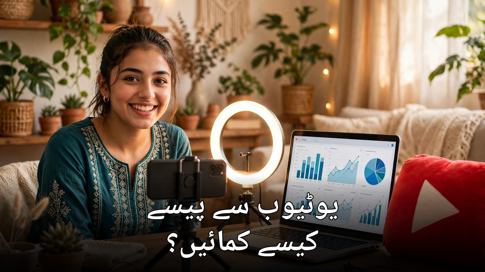

یوٹیوب سے پیسے کیسے کمائیں؟ مکمل اردو گائیڈ

آپ نے بھی ضرور دیکھا ہوگا کہ پاکستان میں ہزاروں نوجوان یوٹیوب سے اچھی خاصی کمائی کر رہے ہیں — کوئی کھانا پکانے کی ویڈیوز بناتا ہے، کوئی تعلیمی سبق پڑھاتا ہے اور کوئی صرف موبائل سے فیس لیس ویڈیوز بنا کر ڈالر کماتا ہے۔ سوال یہ ہے کہ یہ سب ہوتا کیسے ہے؟ اس مضمون میں چینل بنانے سے لے کر مونیٹائزیشن کی شرائط، کمائی کے طریقے اور پاکستان میں رقم نکالنے تک ہر مرحلہ آسان اردو میں بیان کیا گیا ہے۔
1۔ یوٹیوب سے کمائی — خواب یا حقیقت؟
یوٹیوب سے کمائی بالکل حقیقت ہے، مگر یہ راتوں رات امیر ہونے کا طریقہ نہیں۔ یوٹیوب اپنی ویڈیوز پر دکھائے جانے والے اشتہارات کی آمدنی کا ایک حصہ ویڈیو بنانے والے کو دیتا ہے — لمبی ویڈیوز کے اشتہارات کی آمدنی میں یوٹیوب کا حصہ پینتالیس فیصد اور بنانے والے کا حصہ پچپن فیصد ہوتا ہے۔ اہم بات یہ ہے کہ کمائی کا دارومدار ویوز کی تعداد، ناظرین کے ملک اور موضوع پر ہوتا ہے — پاکستانی ناظرین پر فی ہزار ویوز کی آمدنی عام طور پر امریکی یا یورپی ناظرین کے مقابلے میں کم ہوتی ہے، اس لیے صبر اور تسلسل اس کام کی پہلی شرط ہے۔
2۔ یوٹیوب پارٹنر پروگرام کی شرائط کیا ہیں؟
یوٹیوب سے اشتہارات کی کمائی کے لیے آپ کو یوٹیوب پارٹنر پروگرام میں شامل ہونا پڑتا ہے، جس کی بنیادی شرائط یہ ہیں:
- ایک ہزار سبسکرائبر: آپ کے چینل پر کم از کم ایک ہزار سبسکرائبر ہونے چاہئیں
- چار ہزار گھنٹے واچ ٹائم: پچھلے بارہ مہینوں میں آپ کی عوامی ویڈیوز کو چار ہزار گھنٹے دیکھا گیا ہو — یا متبادل کے طور پر پچھلے نوے دن میں شارٹس پر ایک کروڑ درست عوامی ویوز
- گوگل ایڈسینس اکاؤنٹ: ادائیگی کے لیے ایک فعال ایڈسینس اکاؤنٹ منسلک ہونا ضروری ہے
- اصولوں کی پاسداری: چینل پر کوئی کمیونٹی گائیڈ لائن وارننگ یا کاپی رائٹ اسٹرائیک نہیں ہونی چاہیے
- دو مرحلہ تصدیق: آپ کے گوگل اکاؤنٹ پر دو مرحلہ تصدیق فعال ہونا لازم ہے
3۔ قدم بہ قدم: اپنا یوٹیوب چینل کیسے بنائیں؟
چینل بنانا بالکل مفت ہے اور صرف چند منٹ کا کام ہے:
- مرحلہ 1 — گوگل اکاؤنٹ: اپنے گوگل اکاؤنٹ سے یوٹیوب کھولیں اور دائیں اوپر پروفائل تصویر پر کلک کر کے "چینل بنائیں" منتخب کریں
- مرحلہ 2 — نام اور تصویر: چینل کا آسان، یاد رکھنے والا نام رکھیں اور اچھی پروفائل تصویر و بینر لگائیں
- مرحلہ 3 — تفصیل لکھیں: چینل کی "اباؤٹ" میں دو تین جملوں میں بتائیں کہ آپ کس موضوع پر ویڈیوز بنائیں گے — یہ تلاش میں مدد دیتا ہے
- مرحلہ 4 — تصدیق کریں: فون نمبر سے چینل کی تصدیق کریں — اس سے لمبی ویڈیوز، تھمب نیل اور لائیو اسٹریمنگ کی سہولت ملتی ہے
- مرحلہ 5 — پہلی ویڈیو اپلوڈ کریں: پہلی ویڈیو اپلوڈ کر کے چینل کی شروعات کریں — کامل ہونے کا انتظار نہ کریں
4۔ کون سا موضوع چنیں؟ نئے چینلز کے لیے بہترین نِچ
موضوع کا انتخاب کامیابی کا آدھا فیصلہ ہے۔ ایسا موضوع چنیں جس میں آپ کی دلچسپی ہو اور جس پر آپ مسلسل ویڈیوز بنا سکیں:
- تعلیم: انگریزی، ریاضی، کمپیوٹر یا امتحان کی تیاری — طلبہ کی بڑی تعداد روزانہ تلاش کرتی ہے
- اسلامی مواد: دعائیں، سیرت، اخلاقی کہانیاں — مستقل ناظرین والا موضوع
- کھانا پکانا: پاکستانی پکوان، بجٹ ترکیبیں — خواتین اور خاندانوں میں بہت مقبول
- ٹیکنالوجی: موبائل ٹپس، ایپس کی رہنمائی، اے آئی ٹولز — نوجوانوں کی پسند
- کہانیاں اور فیس لیس ویڈیوز: کہانیاں، تاریخ یا معلوماتی ویڈیوز جن میں چہرہ دکھانے کی ضرورت نہیں
5۔ پہلی ویڈیو کیسے بنائیں — صرف موبائل سے
شروعات کے لیے مہنگا کیمرا یا اسٹوڈیو بالکل ضروری نہیں — آج کا موبائل فون ہی کافی ہے۔ ویڈیو کا اسکرپٹ پہلے سے لکھ لیں تاکہ بولتے ہوئے اٹکنا نہ پڑے۔ دن کی روشنی میں ریکارڈ کریں، آواز صاف رکھنے کے لیے شور والی جگہ سے بچیں اور اگر ہو سکے تو سستا ہینڈز فری مائیک استعمال کریں۔ ایڈیٹنگ کے لیے CapCut جیسی مفت ایپ کافی ہے — اس میں کٹ، متن اور موسیقی سب کچھ موجود ہے۔
6۔ واچ ٹائم اور سبسکرائبر کیسے بڑھائیں؟
واچ ٹائم اور سبسکرائبر بڑھانے کے آزمودہ طریقے یہ ہیں:
- تھمب نیل اہم ہے: واضح تصویر اور بڑا سا اردو عنوان — ناظرین پہلے تھمب نیل ہی دیکھتے ہیں
- پہلے تیس سیکنڈ: ویڈیو کے شروع میں ہی بتا دیں کہ ناظر کو کیا ملے گا — لمبی تمہید سے لوگ ویڈیو چھوڑ دیتے ہیں
- تسلسل: ہفتے میں کم از کم دو سے تین ویڈیوز — یوٹیوب مستقل چینلز کو زیادہ دکھاتا ہے
7۔ اشتہارات کے علاوہ کمائی کے 6 طریقے
اشتہارات صرف ایک راستہ ہیں — سمجھدار یوٹیوبرز کمائی کے کئی ذرائع بناتے ہیں:
- اسپانسرشپ: کمپنیاں اپنی مصنوعات کے لیے ویڈیو میں ذکر کا معاوضہ دیتی ہیں — چھوٹے چینلز کو بھی مقامی برانڈز سے پیشکش ملتی ہے
- ایفیلیٹ مارکیٹنگ: ویڈیو کی تفصیل میں مصنوعات کے لنک — خریداری پر کمیشن ملتا ہے
- چینل ممبرشپ: ناظرین ماہانہ فیس دے کر ممبر بنتے ہیں اور خصوصی مواد پاتے ہیں
- اپنی مصنوعات: کورس، ای بک یا ڈیجیٹل ڈیزائن بیچنا — سب سے زیادہ منافع والا راستہ
8۔ پاکستان میں پیسے کیسے نکالیں؟
یوٹیوب کی کمائی گوگل ایڈسینس کے ذریعے ملتی ہے۔ جب آپ کے اکاؤنٹ میں سو ڈالر جمع ہو جائیں تو ادائیگی آپ کے بینک اکاؤنٹ میں منتقل کر دی جاتی ہے — اس کے لیے ایڈسینس میں اپنا پاکستانی بینک اکاؤنٹ اور درست معلومات درج کرنا ضروری ہے۔ پہلی ادائیگی سے پہلے ایڈسینس آپ کے پتے کی تصدیق کے لیے ڈاک سے ایک خط بھیجتا ہے جس میں تصدیقی کوڈ ہوتا ہے — اس لیے ایڈسینس میں پتہ بالکل درست لکھیں۔ بینک اکاؤنٹ اور ایڈسینس کا نام ایک جیسا ہونا چاہیے، ورنہ ادائیگی رک سکتی ہے۔ ٹیکس فائلر ہونا بھی فائدہ مند ہے کیونکہ اس سے بینک کٹوتی کم ہوتی ہے۔
9۔ عام غلطیاں جن سے چینل بند ہو سکتا ہے
- کسی اور کی ویڈیو، موسیقی یا تصویر بغیر اجازت استعمال کرنا — کاپی رائٹ اسٹرائیک سے چینل بند ہو سکتا ہے
- "سبسکرائب کریں، میں بھی کروں گا" والی سب فار سب سکیمیں — یوٹیوب جعلی سبسکرائبر ہٹا دیتا ہے اور چینل خطرے میں پڑ جاتا ہے
- ویوز یا واچ ٹائم خریدنا — یوٹیوب اسے پکڑ لیتا ہے اور مونیٹائزیشن کی درخواست مسترد ہو جاتی ہے
یوٹیوب سے کمائی نہ قسمت ہے نہ جادو — یہ مستقل محنت، ایک اچھے موضوع اور ناظرین کے اعتماد کا نتیجہ ہے۔ پاکستان میں موبائل اور انٹرنیٹ ہر گھر میں موجود ہے، اس لیے موقع ہر کسی کے پاس ہے۔ آج ہی اپنا چینل بنائیں، پہلی ویڈیو ریکارڈ کریں اور ہفتے میں دو ویڈیوز کا معمول بنا لیں — چھ مہینے کی مستقل محنت کے بعد آپ خود فرق دیکھیں گے۔